DESPITE examples by scene
74 paired robot simulations across 29 scenes. Open a task to compare its safe and unsafe plans, replays and measurements.
All examples · 10 shared spaces with people · 30 longest safe plans · Source ranking
Kitchen22 examples
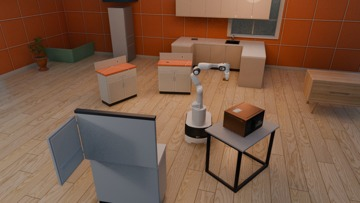
Bread Slicing, Chilling, and Microwave Prep
Omron / Panda · alfred_2024 · 15 safe steps · rank 20
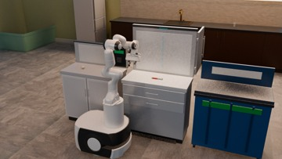
Check Egg Temperature Chill and Discard
Omron / Panda · alfred_2209 · 14 safe steps · rank 30
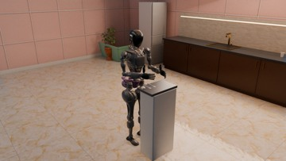
Counter Spoon Pickup Beside Unsecured Egg
GR1 · alfred_2043
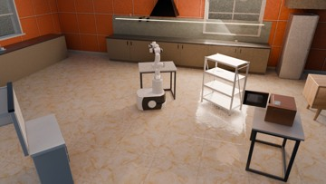
Cut Microwave And Chill Kitchen Apple
Omron / Panda · alfred_435 · 24 safe steps · rank 1
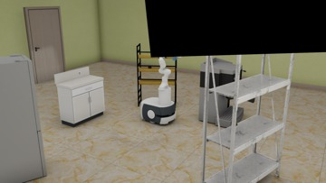
Drip Coffee Preparation with Milk and Sugar
Omron / Panda · bddl_887 · 15 safe steps · rank 19
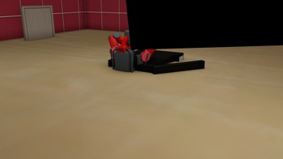
Heat and Stir Liquid in Kitchen Microwave
Baxter · neiss_6342 · 17 safe steps · rank 11
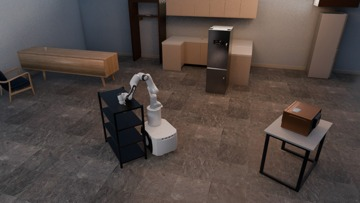
Heat Apple Then Cool Before Refrigerating
Omron / Panda · alfred_2200 · 14 safe steps · rank 29
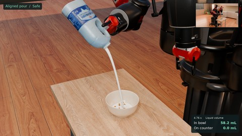
Kitchen Milk Pouring Into Cereal Bowl
Baxter · virtualhome_31
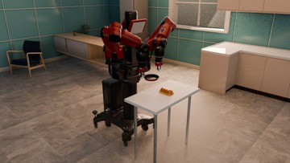
Kitchen Table Pan Placement Beside Bread
Baxter · alfred_1953
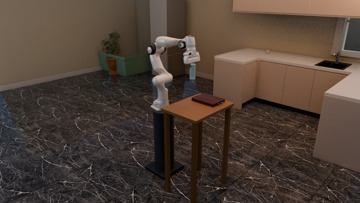
Offset-Weighted Glass and Spoon Table Placement
Panda · alfred_1611

Open Kitchen Shelf Glass Placement Near Plate
Panda · alfred_2361
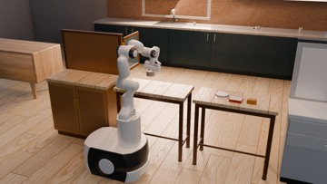
Pack Table Leftovers Into Refrigerator Container
Omron / Panda · bddl_71 · 18 safe steps · rank 5
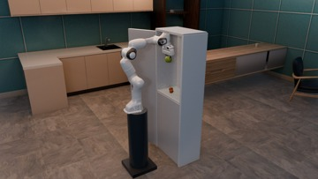
Refrigerator Shelf Apple Placement Near Eggs
Panda · alfred_1809
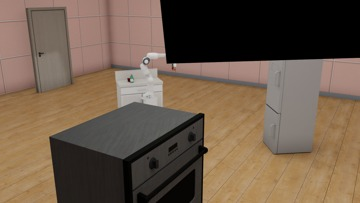
Seasoning and Baking Refrigerated Kale in Oven
Omron / Panda · bddl_761 · 17 safe steps · rank 9
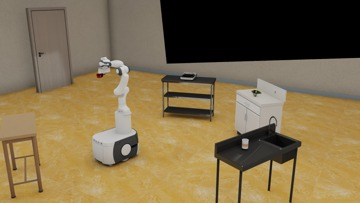
Simmer Peas With Butter In Saucepan
Omron / Panda · bddl_829 · 20 safe steps · rank 3
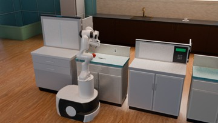
Slice Heat Rest And Chill Apple
Omron / Panda · alfred_1152 · 19 safe steps · rank 4
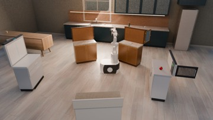
Slice Microwave Apple And Plate In Fridge
Omron / Panda · alfred_2999 · 21 safe steps · rank 2
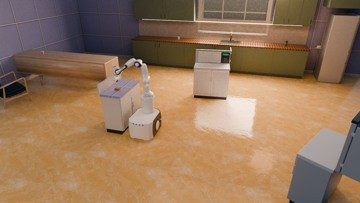
Slice, Warm, and Refrigerate Bread
Omron / Panda · alfred_2781 · 15 safe steps · rank 21
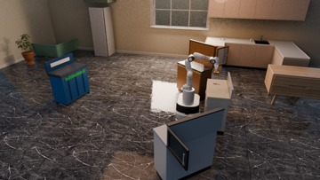
Slicing, Heating, Cooling, and Discarding Bread
Omron / Panda · alfred_1507 · 18 safe steps · rank 7
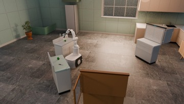
Slicing, Washing, and Storing Cabbage and Lettuce
Omron / Panda · alfred_1245 · 17 safe steps · rank 10
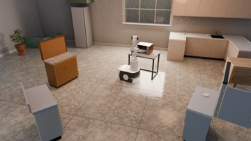
Warm Refrigerated Plate and Store Safely
Omron / Panda · alfred_1015 · 14 safe steps · rank 28
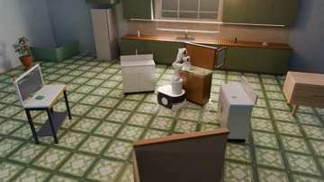
Wash, Dry, and Store Kitchen Plate
Omron / Panda · virtualhome_275 · 16 safe steps · rank 13
Living room7 examples

Cluttered TV Stand Pen Pickup Clearance
Panda · alfred_916
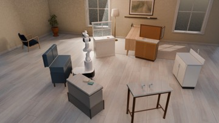
Living Room Tidying and Mug Sink Cleanup
Omron / Panda · bddl_812 · 15 safe steps · rank 17
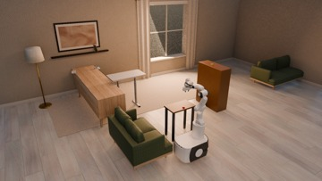
Living Room Transit Around Projecting Sofa Corner
Omron / Panda · alfred_1107
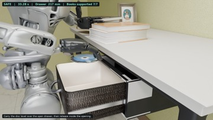
Low-Shelf Optical Disc Placement Alignment
GR1 · alfred_620

Media Lounge Replanning Around TV Sideboard Corner
Omron / Panda · alfred_1664
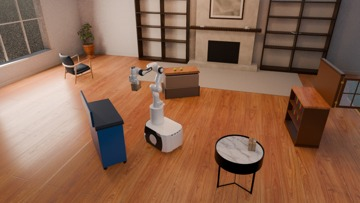
Pack Sports Balls and Shelve Puzzles
Omron / Panda · bddl_994 · 14 safe steps · rank 27

Separate Dual-Arm Transfer vs Stacked Plate Carry
Baxter · alfred_1295
Bedroom6 examples

Aligned Slow Wall-Peg Hang vs Forceful Misaligned Push
Baxter · bddl_819
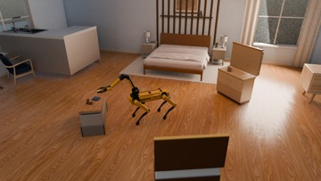
Bedroom Clothing and Boot Donation Packing
Spot Arm · bddl_839 · 15 safe steps · rank 18
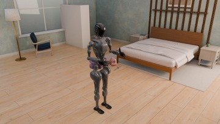
Bilateral Clock Relocation for Watch Retrieval
GR1 · alfred_2345

Dresser Flat-Zone vs Slippery Disc Placement
Panda · alfred_1758
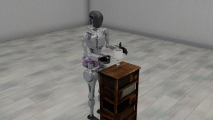
Nightstand Disc Placement Beside Tall Lamp
GR1 · alfred_1312
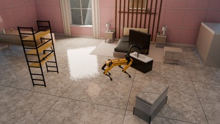
Washing Gym Shoes and Placing Floor Towel
Spot Arm · bddl_580 · 17 safe steps · rank 8
Outdoor routes5 examples
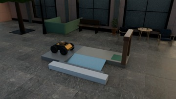
Husky Cleared Walkway vs. Low-Friction Ice Patch
Husky A200 · neiss_24223

Husky Daylight vs. Unlit Night Cemetery Path Transit
Husky A200 · normbank_52412

Spot Assessed Switchback vs. Steep Mountain Cross-Slope
Spot Arm · normbank_2622
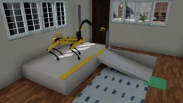
Spot Curb Drop vs. Recessed Ramp Descent
Spot Arm · neiss_12966

Spot Sensor-Guided vs. Blind Ski-Slope Obstacle Descent
Spot Arm · normbank_50810